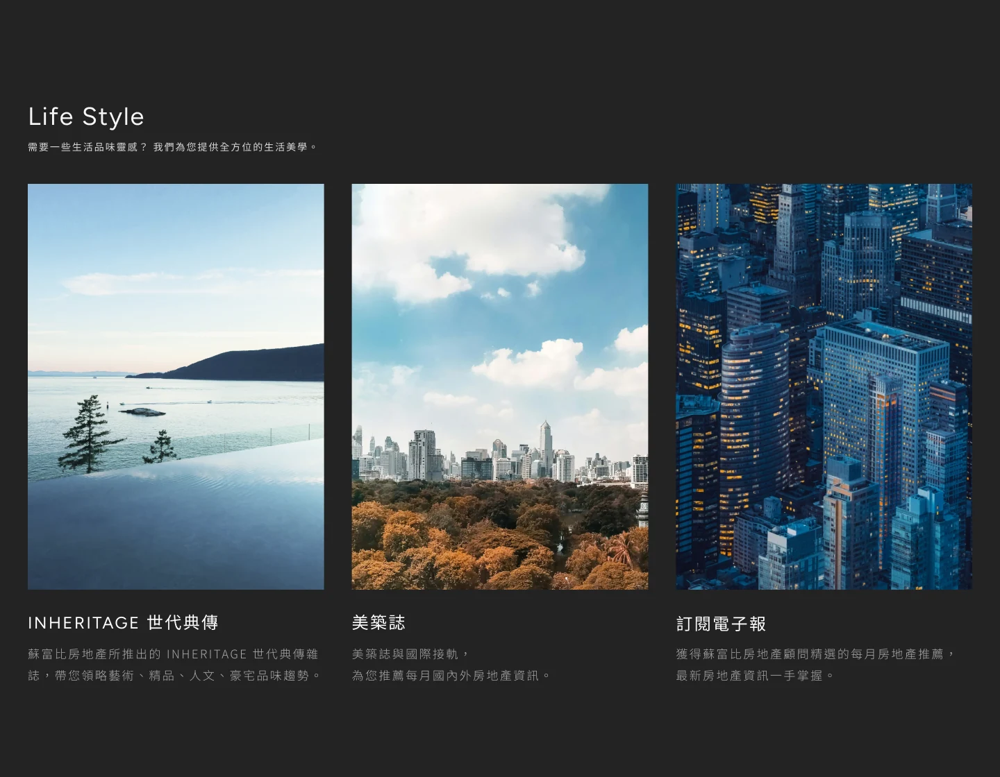
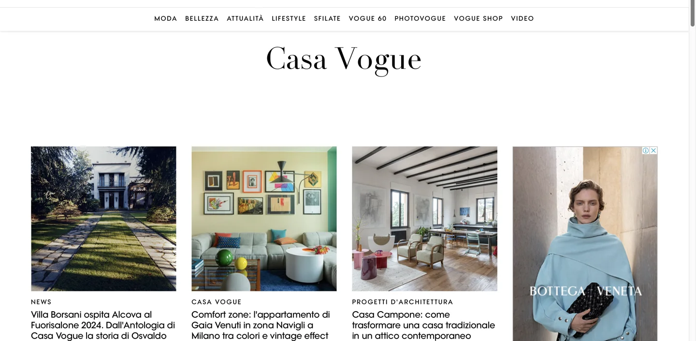
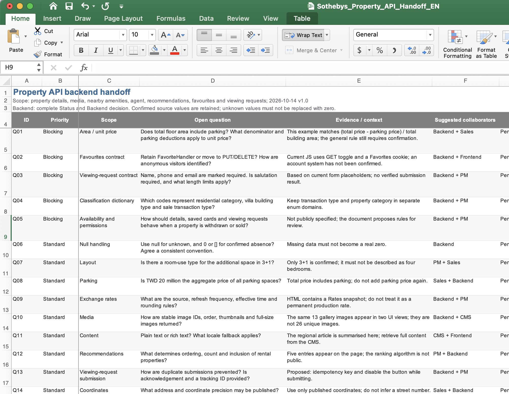

Search needs a clear entry
Expose common actions and filtering criteria early so visitors can begin without first searching for the search tool.
Product designer / UI & UX
Selected portfolio
Taiwan Sotheby’s International Realty Website Redesign
Taiwan Sotheby’s International Realty wanted to connect property search with lifestyle inspiration. The design needed to accommodate visitors with clear criteria as well as those still exploring, while preserving the brand’s visual quality.
The adopted editorial direction brings search into the first screen and connects property information, lifestyle content, favourites, and sharing. Its central design value is to support a journey from finding possibilities to building a shortlist.

Accommodate focused property search and open-ended lifestyle exploration within one brand experience.
Offer criteria and lifestyle entry points, organise property information for comparison, and preserve the journey through saving and sharing.
The editorial direction was adopted after the proposal, defining a responsive experience that connects search, discovery, and shortlist building.
Taiwan properties, selected international properties, and global properties offer distinct starting points for search.
Six named lifestyle areas plus an “Other areas” category connect property exploration with living preferences.
Favourites and recently viewed properties provide ways to retain interests and return to earlier discoveries.
The design brief required both efficient search and room for discovery.
The proposal treated clear property criteria and an emerging lifestyle preference as two starting points. The challenge was to support both, make complex listings readable, and carry interests forward into a shortlist. These were design assumptions drawn from the brief, rather than findings from user testing.

Expose common actions and filtering criteria early so visitors can begin without first searching for the search tool.
Group complex property information and add lifestyle labels so people can recognise options that fit their needs.
Help visitors keep track of properties, return to earlier interests, and share a shortlist with an adviser or friend.
The adopted editorial approach drew on audience information reported in the proposal and visual references from luxury and lifestyle brands. These informed the design rationale; they did not establish that the proposed experience would improve usability.

The proposal reports that Google Analytics indicated an audience interested in books and news. A magazine-like experience became a direction for organising imagery and stories.

Luxury and lifestyle references informed large images, restrained colour, and concise supporting text, giving properties room to communicate atmosphere and detail.
Support a focused search.
Make room for exploration.”
Each interface decision responds to a specific part of the property journey: entering a search, retaining interest, comparing options, and exploring lifestyle preferences.

The homepage must communicate the brand while making the next action visible. Placing criteria and lifestyle search within the hero keeps a task entry available alongside immersive photography, rather than requiring visitors to browse the page first.
Property selection can extend across visits. Recently viewed properties preserve browsing context; favourites give visitors a way to retain promising options. Sharing carries those options into a conversation with an adviser or friend. Recommendations remain a proposed feature, not a validated benefit.
Comparing properties requires more than appealing images. Consistent card structure and visible location, price, and area information make the same attributes available across listings. Categories and filters narrow the set of options while keeping photography central to the editorial direction.
Visitors still forming their preferences need context beyond specifications. Lifestyle categories and content such as INHERITAGE offer another route into exploration. The design intention is to connect that inspiration with property discovery; whether it helps visitors select properties remains untested.

I provided functional specifications to the backend team, translating the interface into implementation requirements.
The document shown is a reconstructed specification example based on the current property page.
The proposed workflow moves from information architecture and wireframe sign-off to desktop and mobile UI, then a responsive front-end demo. The phased plan starts with the homepage and Taiwan properties before extending to international properties and supporting brand content.